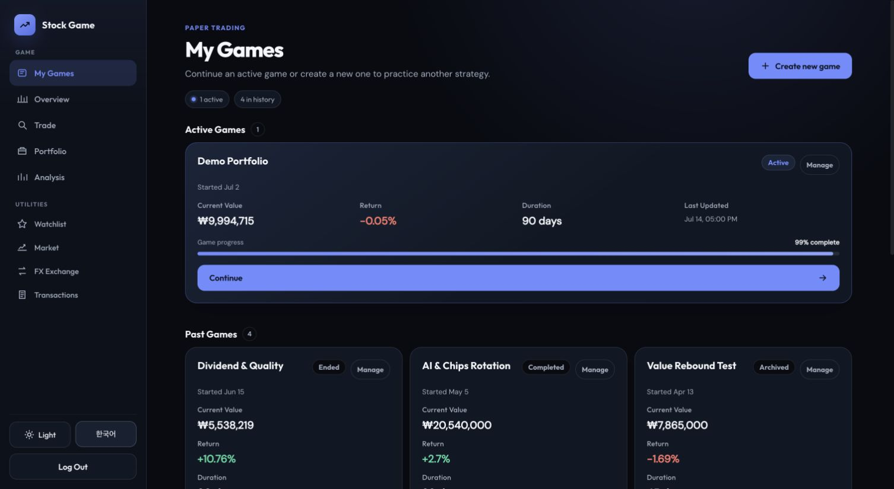

Web · Personal projectLive
Stock Game
A stock market game where you invest virtual money in Korean and US stocks. Choose your starting funds and how long to play, then buy and sell to see how much you can grow your portfolio. You can compare your results with market indexes such as the KOSPI and S&P 500.
- FastAPI
- PostgreSQL
- SQLAlchemy
- React
- 361 backend tests · Nov 5, 2026
- 14 concurrency tests on real PostgreSQL
- 21 browser flow tests
- Order
Only orders from signed-in users are accepted. Sign-in requests are rate-limited.
- Row lock
The game-session row is locked before the balance is checked and deducted. Two simultaneous orders cannot spend the same balance twice.
- Execution
Buying twice with the same balance and selling more than is held are tested by sending concurrent requests to a real PostgreSQL database.
- Asset history
Committing a trade is separated from saving the asset record that follows. Only one of several workers runs the recording job.
Should an order run again if later recording fails?
No. If saving the asset record fails after a trade has committed, the server does not run the order again: it logs the failure and returns success for the trade that is already saved. Orders do not carry an idempotency key yet, so the same request sent again is processed as a new order.

Trades use simulated money, not real funds. Not load-tested, and not verified against the production database.